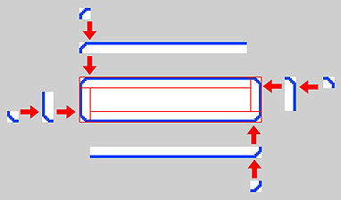

ページにフレームオブジェクトを配置できます。
４隅にパーツを配置して、各々のパーツを引き伸ばす事で枠を作る機能です。
小さくて少ない画像で大きな枠を作れるので、データサイズの削減に役立ちます。
画像の置き方には、画像の数で以下の３つの設定方法があります。
フレームオブジェクトは、画像ファイルを複数枚組み合わせて、フレームオブジェクトを作成するための機能です。
画像ファイルを４隅に配置し、
各辺を引き伸ばすことで構成しています。

フレームオブジェクトの大きさは自在に変えられますので、小さな画像ファイルでサイズの違う枠を作るのに効果的です。
ページ上で、[右クリックメニュー]→[新規フレーム]を選択します。
ページのレイアウト領域に四角形のオブジェクトが配置されます。
この状態のフレームオブジェクトは、画像ファイルが指定されていない状態です。
正しくフレームとして表示するためには画像ファイルを指定する必要があります。